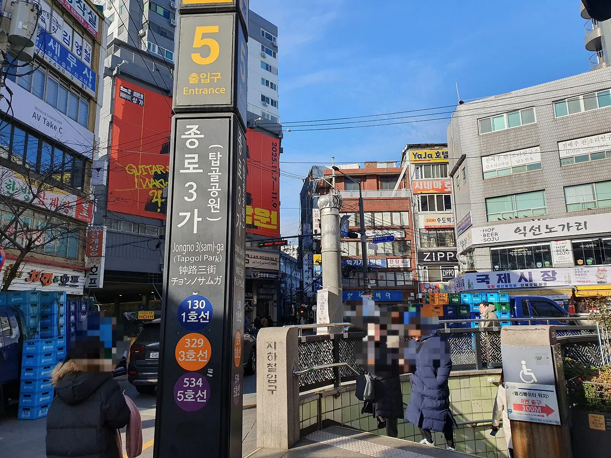
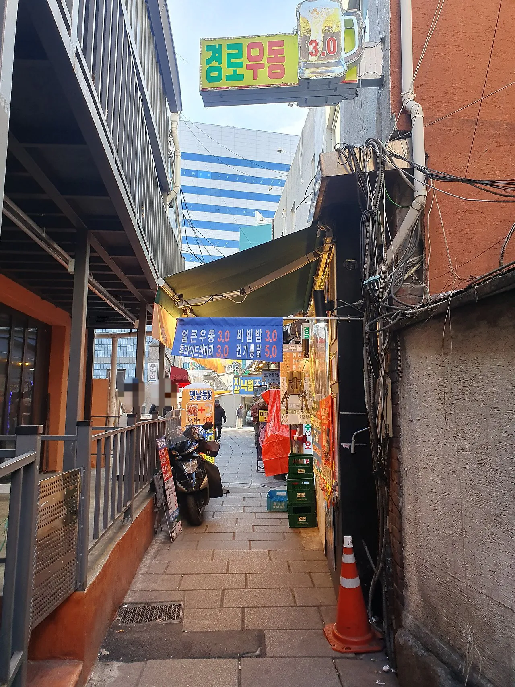
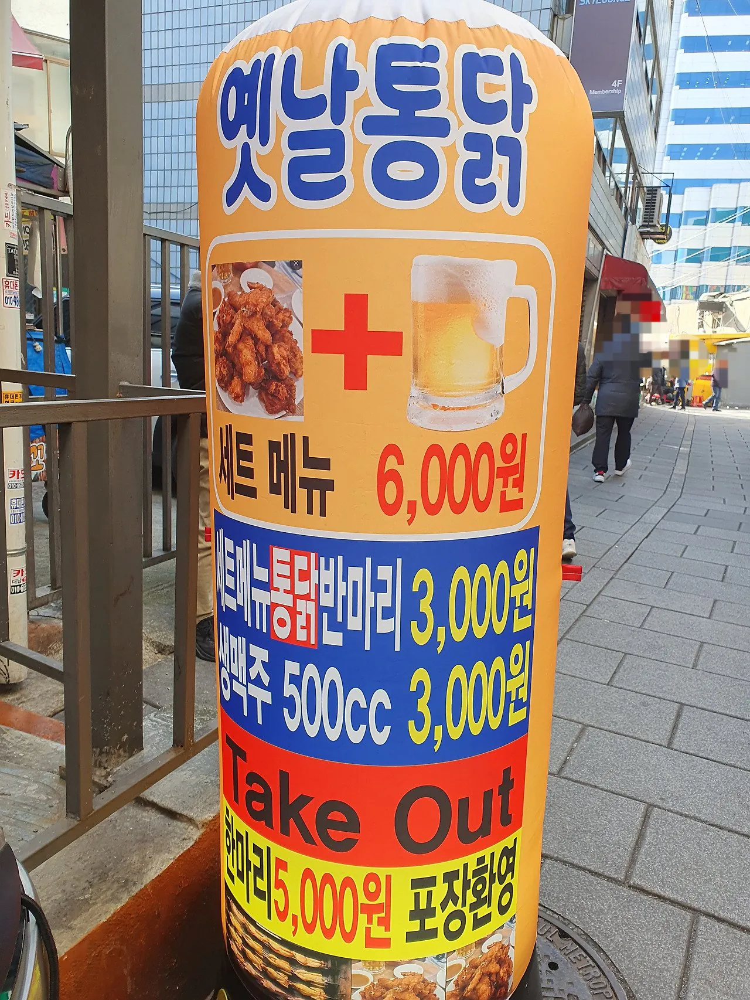
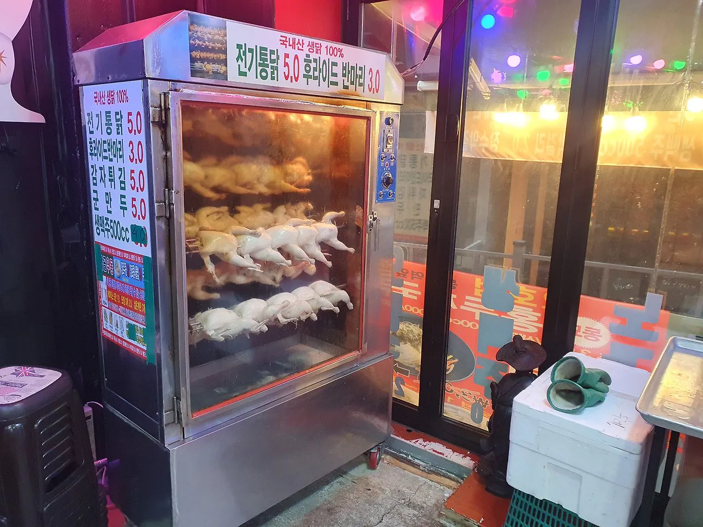
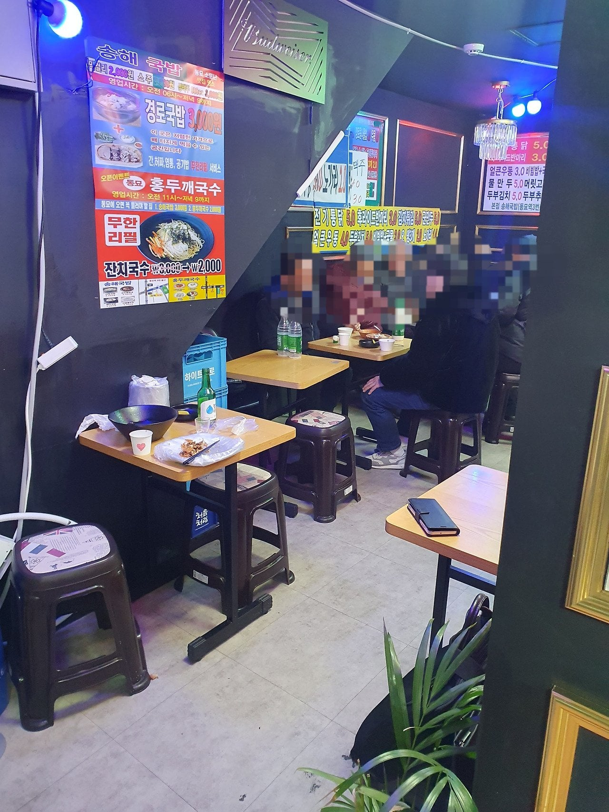
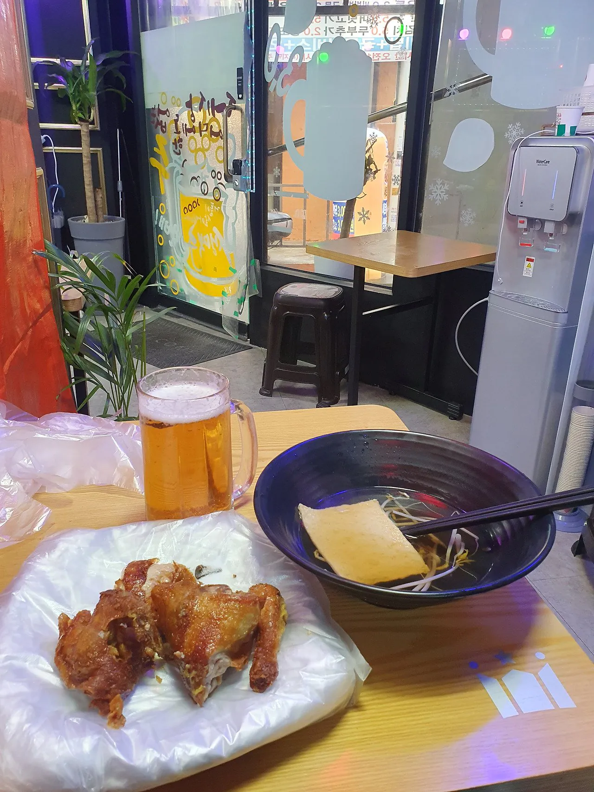
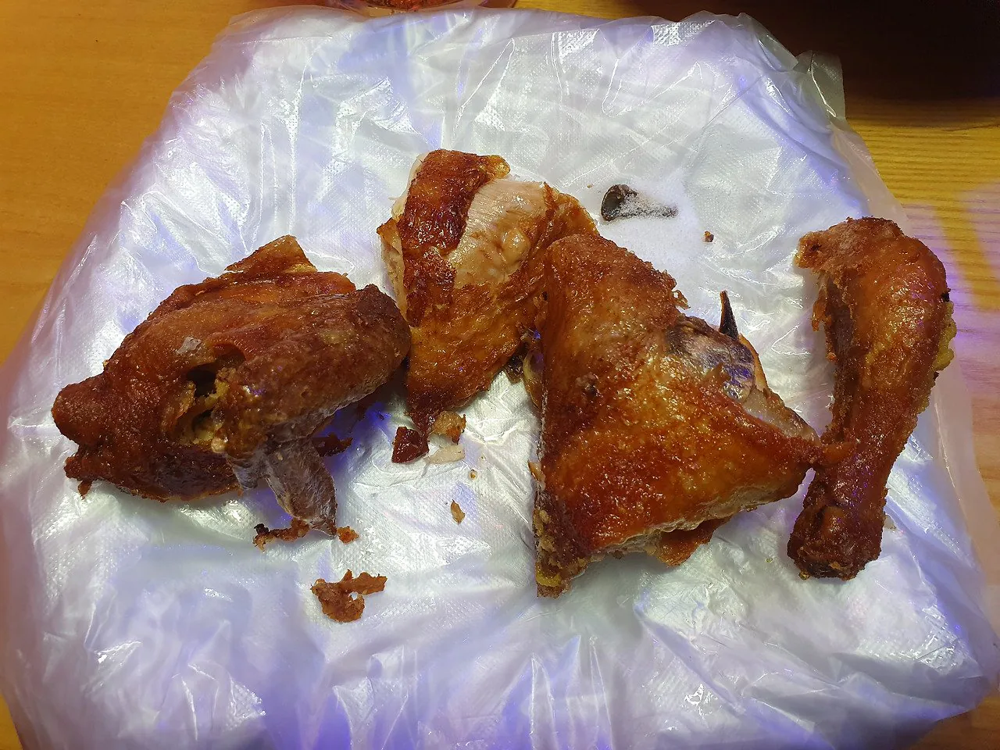

치킨반마리+생맥500 6천원..
며칠전 유투버가 올린 영상에도 6천원이였음
숙주나물어묵국은 써비스라고함







치킨반마리+생맥500 6천원..
며칠전 유투버가 올린 영상에도 6천원이였음
숙주나물어묵국은 써비스라고함
저 치킨엔 소주지!
동묘앞, 탑골공원 쯤에 저런 가게 많음
주 고객은 노년층인데 젊은이들인 우리가 가기에도 부담없음
서울 살면서 종로 잘 안가봤으면 가봐. 은근히 가게도 많고 좋더라
종각 그립네
나두 거기서 수험생활을 했제.. 그리움 가끔
잔치국수 무한리필이... 저 가격에 가능해? 사장님 봉사하시나
노인들은 아무리 무한리필이어도 리필해드시는 분들이 잘 없어서 그럴꺼같아
껍질 ㅈㄴ맛있어보이네
동묘앞 안가봤는데 우와... 가격이 너무 좋네요
개틀딱새끼들 대낮부터 술취해서 퍼먹고있는곳임
뭐 해코지라도 당했음?? ;;;
저기 근처 고시원에서 거주하면서 공부했었는데 지나가다 진짜 시비 많이 검.
손님 대부분이 할저씨들만 많이 오는 편의점 알바해봤는 뭐라도 있었겠지 싶네..
ㅇㅇ 해봄 노숙자한테 외상 실랑이도 걸려봤고 바쁠때 노인이 환불 시비 걸어서 사기도 당해봄. 지난 일이고 스쳐지나가는 이슈 중 하나라 생각함 당시에는 시급 버는 알바한테 너무 가혹하다 생각했지만 지금은 뭐 이해되는 일이라 그러려니함
와 진짜 존나 개병신같다
근데 쟤도 병신이 아닌게 진짜 낮술쳐먹고 고성방가하고 오줌싸는새끼들 천지임
합리적이네 나름...
그 이상인데?
합리적이라고 말 못해 다른데서는 이가격에 못팔거든
저게 가능한 가격이구나
회전 빠르게 돌리면 괜찮을지도
동묘 벼룩시장 종종 구경하러 가는 데
오뎅도 아직 개당 500원에 판다던가 붕어빵 천원에 2개 계란빵 1개에 천원
이런 자잘한 것들 저렴한 게 많이 남아 있어서 좋음
미쳤네
오늘 간다
한마리에 생맥두잔하고 운전해서 와야겠네

혜잔데
동묘의 저런 분위기가 너무 좋아. 외국인 관광객들은 동대문에 가까운 동묘에 숙소 잡아서 달달달 캐리어 끌고 움직이고 ㅋㅋ 어르신들도 갈곳 한두군데 있어서 옹기종기 모여 계시고, 의류상가 사람들 활기차게 밤낮 바꿔가면서 열심히 살아가고 ..
와 좋아보이는데 나름 분위기도 옛날 분위기 좀 있고
혜자다!
20세기 말에 저 동네에서 국밥 2천원인가 한다고 해서 여친이랑 일부러 먹어보러 갔던 기억나네
노포맨으로써 아주 가보고싶군
저런곳은 가게시작할때 매매로 시작해서 월세걱정 없는곳인가?